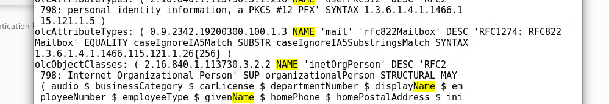

Observaciones
Todo el servidor fue configurado con PHP 7.1, por lo tanto cualquier paquete que requiera PHP deberá ser compatible con la versión 7.1
Datos de acceso al servidor
IP: 192.168.52.4:8282/nextcloud
IP pública: http://201.99.68.59/nextcloud
Root
Usuario: root
Password: Corepro1
Usuario: coreprocesses
Password: Corepro1
LDAP
Usuario: admin
Contraseña: CoreproTab1
Admin GitLab
Usuario administrador: root
Contraseña: Corepro1!TabVIM3x
Admin Mattermost
Usuario administrador: root
Contraseña: Corepro1!TabVIM3x
Instancia MySQL
Usuario admin: root
Contraseña: Corepro1!TabVIM3x
Base de datos Mattermost
BD: mattermost
Usuario: mmuser
Contraseña: mmuser-Corepro1
NextCloud
Usuario administrador: admin
Contraseña: Corepro1
GitLab: 8089
Mattermost: 192.168.52.4:8065
Cambio PWD LDAP: 8090
Server name: coreprocesses
Instalación y actualización del servidor
Instalar Centos 7 con Particionado Automático (o particionado que requiera el ambiente que se desea configurar) y la opción Servidor con GUI
Para actualizar el sistema operativo favor de seguir la guía:
Instalación de XRDP (el escritorio remoto)
Favor de seguir esta guía:
Instalación de OpenLDAP (Directorio activo para configurar aplicaciones con una sola cuenta)
1.- Instalación de OpenLDAP: https://www.itzgeek.com/how-tos/linux/centos-how-tos/step-step-openldap-server-configuration-centos-7-rhel-7.html
2.- Configuración de OpenLDAP
Setup LDAP admin password
slappasswd -h {SSHA} -s CoreproTab1
{SSHA}pyEMgaq4yfeLjfUJ4AqYe5F5A2sAbDu/
Ruta de configuración de OpenLdap:
/etc/openldap/slapd.d/
Archivo db.ldif
dn: olcDatabase={2}hdb,cn=config
changetype: modify
replace: olcSuffix
olcSuffix: dc=coreprocesses,dc=com
dn: olcDatabase={2}hdb,cn=config
changetype: modify
replace: olcRootDN
olcRootDN: cn=admin,dc=coreprocesses,dc=com
dn: olcDatabase={2}hdb,cn=config
changetype: modify
replace: olcRootPW
olcRootPW: {SSHA}pyEMgaq4yfeLjfUJ4AqYe5F5A2sAbDu/
Archivo monitor.ldif
dn: olcDatabase={1}monitor,cn=config
changetype: modify
replace: olcAccess
olcAccess: {0}to * by dn.base="gidNumber=0+uidNumber=0,cn=peercred,cn=external, cn=auth" read by dn.base="cn=admin,dc=coreprocesses,dc=com" read by * none
Archivo base.ldif
dn: dc=coreprocesses,dc=com
dc: coreprocesses
objectClass: top
objectClass: domain
dn: cn=admin ,dc=coreprocesses,dc=com
objectClass: organizationalRole
cn: admin
description: LDAP Manager
dn: ou=People,dc=coreprocesses,dc=com
objectClass: organizationalUnit
ou: People
dn: ou=Group,dc=coreprocesses,dc=com
objectClass: organizationalUnit
ou: Group
Comando para importar el archivo base.ldif
ldapadd -x -W -D "cn=admin,dc=coreprocesses,dc=com" -f base.ldif
Datos generales del LDAP:
- usuario administrador: admin
- Contraseña: CoreproTab1
- Cadena de conexión: cn=admin ,dc=coreprocesses,dc=com
- Base DN: dc=coreprocesses, dc=com
Agregar atributo de correo electrónico:
Al parecer con la edición directa del archivo
gedit /etc/openldap/schema/inetorgperson.ldif
No funciona de manera permanente, por lo tanto me base en la modificación del esquema con este tutorial:
Basicamente agregué como atributo mandatorio el mail en los esquemas person e inetOrgPerson
Si por alguna circunstancia no funciona editar el archivo para poder agregar el correo, intentan solo de paso 1 al 3, no reiniciar el servicio de LDAP, primero crear el usuario con el correo y posteriormente reiniciar el servicio de LDAP.
1.- Ejecutar comando:
gedit /etc/openldap/schema/inetorgperson.ldif
gedit /etc/openldap/schema/inetorgperson.schema
2.- Pegar bloque al esquema
olcAttributeTypes: ( 0.9.2342.19200300.100.1.3 NAME 'mail' 'rfc822Mailbox' DESC 'RFC1274: RFC822 Mailbox' EQUALITY caseIgnoreIA5Match SUBSTR caseIgnoreIA5SubstringsMatch SYNTAX 1.3.6.1.4.1.1466.115.121.1.26{256} )
3.- Debe quedar así:

Reiniciar el servicio de ldap
systemctl stop slapd
systemctl start slapd
systemctl enable slapd
systemctl restart slapd
Instalar explorador de directorio activo (Apache Directory Studio)
- Descargar el paquete e instalarlo: http://directory.apache.org/studio/download/download-linux.html
- Crear LDAP Connection

- Colocar el usuarios administrador

- Crear el grupo Developers


- Crear usuarios (Favor de crearlos dentro de la Unidad Ogranización Developers)
- Crear usuario en LDAP con Apache Active Directory Studio: https://access.redhat.com/documentation/en-US/Fuse_MQ_Enterprise/7.1/html/Security_Guide/files/LDAP-AddUserEntries.htmlLos
- Los usuarios deben tener llenadas las siguientes propiedades:
- cn: nombre completo
- sn: apellidos
- mail: correo de la empresa
- uid: nombres usuario: lmartinez, bdominguez, etc
- userPassword: password en texto plano
SUPER IMPORTANTE, por defecto la autenticación LDAP de Apache, viene deshabilitada por el Owncloud no se puede conectar con ldap, hacer lo siguiente:
Verifica si la autenticación LDAP está habilitada
Comando:
getsebool -a|grep ldap
Habilitar la autenticación LDAP
Comando:
setsebool httpd_can_connect_ldap 1
Reiniciar Apache: apachectl restart
CONFIGURACIÓN DE CONEXIÓN A LA AUTENTICACIÓN LDAP DE MANERA PERMANENTE
Verifica si la autenticación LDAP está habilitada
getsebool -a|grep ldap
Habilitar la autenticación LDAP por medio del comando setsebool.
El comando setsebool activa o desactiva Booleanos, la opción -P es para hacer los cambios persistentes (sin este parámetro, al reiniciar se perderá el cambio) y x es on o 1 para activar, u off o 0 para desactivar.
Para nuetro caso el comando queda con la siguiente sintaxis:
setsebool -P httpd_can_connect_ldap 1
Reiniciar el servicio
systemctl restart httpd
Explicación del problema:
Instalación de GitLab (IMPORTANTE, INSTALAR LA VERSIÓN COMMUNITY EDITION, sino algunas caracteristicas no funcionaran)
- Guía de instalación: https://about.gitlab.com/installation/#centos-7
- Actualización de comando para bajar el paquete: curl https://packages.gitlab.com/install/repositories/gitlab/gitlab-ce/script.rpm.sh | sudo bash
- URL externa: sudo EXTERNAL_URL="http://201.99.68.59:8089" yum install -y gitlab-ce
- Autenticarse con root
- Usuario administrador: root
- Contraseña: Corepro1!TabVIM3x
- Agregar la configuración LDAP del archivo de configuración:
- Ejecutar el comando: sudo gedit /etc/gitlab/gitlab.rb
- Buscar la sección de LDAP
- bind_dn: cn=admin ,dc=coreprocesses,dc=com
- password: CoreproTab1
- base: ou=developers,ou=Group,dc=coreprocesses,dc=com

########################################################################################################################
gitlab_rails['ldap_enabled'] = true
###! **remember to close this block with 'EOS' below**
gitlab_rails['ldap_servers'] = YAML.load <<-'EOS'
main: # 'main' is the GitLab 'provider ID' of this LDAP server
label: 'Coreprocesses'
host: 'localhost'
port: 389
uid: 'uid'
bind_dn: 'cn=admin ,dc=coreprocesses,dc=com'
password: 'CoreproTab1'
encryption: 'plain' # "start_tls" or "simple_tls" or "plain"
verify_certificates: false
active_directory: true
allow_username_or_email_login: false
# lowercase_usernames: false
block_auto_created_users: false
base: 'dc=coreprocesses,dc=com'
# user_filter: ''
# ## EE only
# group_base: ''
# admin_group: ''
# sync_ssh_keys: false
#
# secondary: # 'secondary' is the GitLab 'provider ID' of second LDAP server
# label: 'LDAP'
# host: '_your_ldap_server'
# port: 389
# uid: 'sAMAccountName'
# bind_dn: '_the_full_dn_of_the_user_you_will_bind_with'
# password: '_the_password_of_the_bind_user'
# encryption: 'plain' # "start_tls" or "simple_tls" or "plain"
# verify_certificates: true
# active_directory: true
# allow_username_or_email_login: false
# lowercase_usernames: false
# block_auto_created_users: false
# base: ''
# user_filter: ''
# ## EE only
# group_base: ''
# admin_group: ''
# sync_ssh_keys: false
EOS
########################################################################################################################
- Reiniciar la configuración de GitLab
- Comando: gitlab-ctl reconfigure
- Reiniciar el sistema operativo:
- Comando: reboot
- Pruebas del directorio activo:
- Verificala existencia de un usuario: ldapsearch -D "cn=admin ,dc=coreprocesses,dc=com" -w CoreproTab1 -p 389 -h localhost -b "ou=developers,ou=Group,dc=coreprocesses,dc=com" -Z -s sub "CN=Luis Marino Martínez Candelero"
- Deshabilitar creación de cuentas
- Autenticarse con el usuario root:
- Deshabilitar la propiedad Sign-up enabled

- Guardar los cambios
- Deshabilitar la creación de proyectos para los usuarios nuevos
- http://201.99.68.59:8089/admin/application_settings buscar Default projects limit = 0
- Deshabilitar la creación de proyectos por default
Abrir el archivo de configuración
Buscar la línea (colocarla en false)
gitlab_rails['gitlab_default_can_create_group'] = false
Reiniciar GitLab
gitlab-ctl reconfigure
sudo gitlab-ctl restart
- Habilitar la configuración de cuenta de correos
- Ejecutar el comando: sudo gedit /etc/gitlab/gitlab.rb
Configuración de correo para GitLab:
================================================================================
gitlab_rails['smtp_enable'] = true;
gitlab_rails['smtp_address'] = "mail.coreprocesses.com.mx"
gitlab_rails['smtp_port'] = 587;
gitlab_rails['smtp_user_name'] = "bot@coreprocesses.com.mx"
gitlab_rails['smtp_password'] = "Corepro1"
gitlab_rails['smtp_domain'] = 'coreprocesses.com.mx';
gitlab_rails['smtp_tls'] = false;
gitlab_rails['smtp_openssl_verify_mode'] = 'none'
gitlab_rails['smtp_enable_starttls_auto'] = false
gitlab_rails['smtp_ssl'] = false
gitlab_rails['smtp_force_ssl'] = false
================================================================================
Adicionalmente cambiar la configuración de:
# gitlab_rails['gitlab_email_from'] = 'example@example.com'
# gitlab_rails['gitlab_email_reply_to'] = 'noreply@example.com'
Por:
gitlab_rails['gitlab_email_from'] = 'bot@coreprocesses.com.mx'
gitlab_rails['gitlab_email_reply_to'] = 'bot@coreprocesses.com.mx'
Ojo: según la cuenta que se haya creado (para efectos de este ejemplo. use mi cuenta personal.
Ejecutar el comando de reconfiguración:
gitlab-ctl reconfigure
Probar configuración de correo:
Ejecutar la consola de GitLab: gitlab-rails console
Ejcutar comando de correo: Notify.test_email('marino.martinez@outlook.com', 'Test GitLab', 'Test GitLab').deliver_now
Si el correo se envío debe salir algo así en pantalla:

De lo contrario revisar parametros de configuración.
Configuración del repositorio para que los desarrolladores puedan hacer push en la master (por defecto solo los master pueden hacer push)
Dentro del proyecto: Settings->Repository-> Protected Branches -> Allowed tu push -> Developers + Masters
Instalación de Mattermost
Procedimiento oficial: https://docs.mattermost.com/install/install-rhel-71.html
Instalar MYSQL
1 Descargar el repositorio: wget http://dev.mysql.com/get/mysql57-community-release-el7-9.noarch.rpm
Instalación MySQL
- Usuario admin: root
- Contraseña: Corepro1!TabVIM3x
Datos generales de base de datos de mattermost
BD: mattermost
Usuario: mmuser
Contraseña: mmuser-Corepro1
Cambiar el password de Root:
ALTER USER 'root'@'localhost' IDENTIFIED BY 'Corepro1!TabVIM3x';
Crear el usuario de Mattermost
create user 'mmuser'@'%' identified by 'mmuser-Corepro1';
Crear la base de datos de Mattermost
create database mattermost;
Obtener el último paquete de Mattermost
Directorios de instalación de Mattermost:
/opt/mattermost/data
Archivo de configuración de Mattermost
/opt/mattermost/config/config.json
Abrir con comando:
gedit /opt/mattermost/config/config.json
Archivo de configuración de servicio:
========================================================================================
[Unit]
Description=Mattermost
After=syslog.target network.target mysqld.service
[Service]
Type=notify
WorkingDirectory=/opt/mattermost
User=mattermost
ExecStart=/opt/mattermost/bin/platform
PIDFile=/var/spool/mattermost/pid/master.pid
TimeoutStartSec=3600
LimitNOFILE=49152
[Install]
WantedBy=multi-user.target
========================================================================================
URL: localhost:8065
Datos de acceso root de Mattermost
Username: root
Password: Corepro1!TabVIM3x
Primeros pasos:
Configurar la URL Externa: http://localhost:8065/admin_console/general/configuration
Configurar LDAP:
Configurar: Correo: http://localhost:8065/admin_console/notifications/notifications_email
Crear El Team Name
Team Name: Coreprocesses
En Team Settings habilitar que se puedan agregar los usuarios al team creado
Allow any user with an account on this server to join this team = Yes
Deshabilitar la creación de equipos
http://192.168.52.132:8065/admin_console/general/users_and_teams
Enable Team Creation: False
Reiniciar Mattermost
sudo systemctl restart mattermost
Habilitar Link Preview
Integración con GITLAB
Al parecer LDAP de Mattermost solo está diponible en la versión Enterpise
Por lo tanto, Mattermost se configurará con autenticación de GitLab
Seguirt tutorial: https://docs.mattermost.com/deployment/sso-gitlab.html
1.- Agregar app en GitLab: http://localhost:8181/admin/applications/new
Con las URLs:
http://201.99.68.59:8065/login/gitlab/complete
http://201.99.68.59:8065/signup/gitlab/complete
2.- Agregar la configuración en Mattermost (OJO hacerlo desde elarchivo de configuración, ya que luego desde la venta de configuración pueden existir errores):
Comando para abrir archivo de configuración:
gedit /opt/mattermost/config/config.json
Agregar la configuración:
"GitLabSettings": {
"Enable": true,
"Secret": "08723b1b63db91e488c201dc255017e739f708677711fd641f96c8a9b5c4b630", //Esto se obtiene de la aplicación configurada en GitLab
"Id": "c09fadbda083bed3e733767bc359d3427d0ca8e94a2d86c143a2911fe72acde0", //Esto se obtiene de la aplicación configurada en GitLab
"Scope": "",
"AuthEndpoint": "http://192.168.52.132:8181/oauth/authorize", //La URL de GitLab
"TokenEndpoint": "http://192.168.52.132:8181/oauth/token", //La URL de GitLab
"UserApiEndpoint": "http://192.168.52.132:8181/api/v4/user" //La URL de GitLab
},
Guardar los cambios
3.- Reiniciar Mattermost y GitLab
sudo systemctl restart mattermost
sudo gitlab-ctl reconfigure
Configurar la URL de acceso en:
http://201.99.68.59:8065/admin_console/general/configuration
Configurar la cuenta de correo en:
http://201.99.68.59:8065/admin_console/notifications/notifications_email
Configurar el BOT de integración GitLab y Mattermost
Crear la integración en Mattermost
http://201.99.68.59:8065/coreprocesses/integrations
Title: Gitlab
Description: Gitlab Integration
Channel: Coreprocesses
Habilitar la aplicación Mattemost en GitLab
http://201.99.68.59:8089/admin/application_settings/services
Agregar la URL del Webjook
http://201.99.68.59:8065/hooks/hytdmrgdc7ng5rarwi8uszg1dc (esta URL se genera en el paso previo, no siempre es la misma)
Username: hcbot
Cambio de password de usuarios LDAP
Instalar Apache
Seguir este tutorial:
Instalar PHP 7.1
yum install epel-release
yum install mod_php71w php71w-common php71w-fpm php71w-opcache php71w-cli
php --version
Instalación de paquetes adicionales de PHP para LDAP
yum install php71w-ldap php71w-intl
Verifica si la autenticación LDAP está habilitada
Comando:
getsebool -a|grep ldap
Habilitar la autenticación LDAP
Comando:
setsebool httpd_can_connect_ldap 1
systemctl restart httpd
Colocar página para cambio de Password de LDAP
Configurar HOST para la página de cambio de Password
Abrir el archivo de configuración de Apache y Cambiar el Puerto del 80 al 8091
gedit /etc/httpd/conf/httpd.conf
Ejecutar la instrucción, para dar permisos en el puerto:
semanage port -a -t http_port_t -p tcp 8091
Colocar el archivo de PHP que cambia el password en:
/var/www/html
Instrucción:
gedit /var/www/html/ChangePasswordLDAP.php
Por último validar que se pueda cambiar el password en la ruta pública
http://201.99.68.59:8091/ChangePasswordLDAP.php
Ruta de Acceso:
http://201.99.68.59:8091/ChangePasswordLDAP.php
Mostrar los nombres Reales o Nickname
Currently, in Account Settings > Display we have a setting that lets users control whether names in Mattermost are displayed as full names or usernames.
Creación de cuentas LDAP
Para la creación de cuentas utilizar Apache Active Directory
Descargar el paquete e instalarlo: http://directory.apache.org/studio/download/download-linux.html
Datos generales del LDAP:
usuario administrador: admin
Contraseña:
CoreproTab1
Cadena de conexión: cn=admin ,dc=coreprocesses,dc=com
Base DN: dc=coreprocesses, dc=com
Crear usuarios (Favor de crearlos dentro de la Unidad Ogranización Developers)
Crear usuario en LDAP con Apache Active Directory Studio: https://access.redhat.com/documentation/en-US/Fuse_MQ_Enterprise/7.1/html/Security_Guide/files/LDAP-AddUserEntries.htmlLos
Los usuarios deben tener llenadas las siguientes propiedades:
cn: nombre completo
sn: apellidos
mail: correo de la empresa
uid: nombres usuario: lmartinez, bdominguez, etc
userPassword: password en texto plano y la contraseña por defecto: Corepro1
Problemas y soluciones comunes
Problema: El servidor de GitLab no funciona
Solución:
Ejecutar el siguiente comando:
gitlab-ctl reconfigure
sudo gitlab-ctl restart